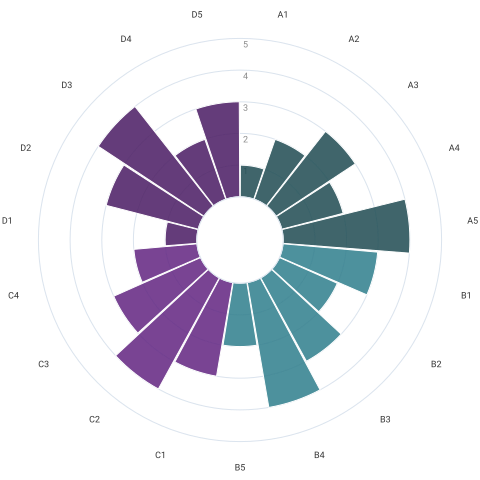

What DigiPuls is
DigiPuls implements the Moldova Digital School Framework: a 19-indicator, 6-level, 4-domain integrated maturity model that schools self-assess against over a two-year cycle, with a mandatory compliance floor (Order No. 675/2024) for network and device infrastructure. It replaces the Estonian “Oglinda Digitală” platform with an instrument built for Moldova, covering leadership, teaching and learning, human capacity, and infrastructure.
Server-rendered Node.js/Express with no frontend build step, on MySQL. The README carries an implementation-status table — an honest list of what is built and what is not.
Three languages, one instrument
English, Romanian and Russian — and not only the buttons. All 19 indicators, their six level descriptions each, and the quantitative benchmarks exist in full in every language. Romanian is the state language; Russian is the working language of a substantial share of schools in the north and south.
- English
- Română
- Русский
A missing translation fails the build rather than quietly falling back to English: the test suite compares the three dictionaries key by key, checks that message placeholders survived translation, and renders every page in all three languages.
Built to be usable by everyone who has to use it
School staff don't choose whether to use a national platform, so accessibility here isn't a compliance annex. Every viewer can set, from the menu at the top of any page:
Light, dark or system
Follows the operating system by default; overridable either way.
High contrast
AAA-level pairings drawn from the same two brand ramps, with every link underlined.
Four text sizes
100% to 150%. The whole interface reflows rather than overflowing.
Reduced motion
Honours prefers-reduced-motion, with an explicit override.
Always-underline links
For anyone who can't rely on colour to spot a link.
Keyboard and screen reader
Skip link, landmarks, labelled controls, live regions, 44px targets.
Preferences are stored per browser — a cookie the server reads plus localStorage — so they apply on the very first render with no flash, work before login, and keep working with JavaScript switched off. They are never attached to the user's account: a display setting shouldn't become another field of personal data about a named school employee.
A step-by-step process, not a questionnaire
An assessment cycle can run for weeks and involve several people — school leadership, teachers, the educational technologist, an external validator, meta-mentors. So it is six independently saved steps rather than one long form to be completed in order:
Not started
Nobody has opened this step yet.
In progress
Some, not all, indicators rated.
Needs attention
Rated, but evidence is missing for a Level 2+ score.
Complete
Rated, with the evidence each rating requires.
Each section is saved when you press its own save button — there is no need to finish everything at once or in any particular order, and you can return to an earlier step at any time. The only gate is final confirmation, which checks completeness and evidence and sends you back to the review step with an inline message rather than a dead end. Once a cycle is confirmed it becomes immutable: the only way to change anything further is to start a continuation cycle, so a result that has been reported on cannot quietly change afterwards.
The status colour is never the only signal — every step also states its status in text for screen readers and for anyone who can't distinguish the four dots.
The maturity wheel

A concentric, sectioned visualisation: 19 wedges, one per indicator, grouped by domain. Ring distance from the centre is that indicator's level (0–5). Plain server-rendered SVG, no chart library, and it doubles as a coarser four-sector “domain bands” view for the public tier.
Its sector colours are theme-aware, and the exact levels are always also listed as text in the table beside it — the wheel is a summary, never the only copy of the data.
Rendered in src/services/wheelChart.js.
Visibility, not automated matching
Every partner and project is different, and support decisions are made case by case — so DigiPuls deliberately has no automated matching or scoring engine. Ministry, territorial and partner dashboards get filterable, sortable, CSV-exportable overviews of real school data (enrolment band, Order 675 status, per-domain scores). What you see is what the data says, with no ranking layered on top.
Those dashboards show the latest confirmed cycle as the official record, and flag separately when a newer draft is in progress — so a school starting a new assessment never causes its confirmed result to disappear from a national view.
The one system-to-system integration is the SIME onboarding seam: search a school in Moldova's national education-management system, review and edit the imported fields, then submit — import, check, edit, submit, not a blind auto-fill.
Honest about its own limits
The Order 675 panel states in the interface that it checks declared equipment quantities (Annex 2) and the network checklist (Annex 5) only — technical specifications, supplementary equipment and room-usage mandates are not verified. The training-needs dashboard states that its ordering is one disclosed criterion, not a matching engine. The footer states that the SIME connection is currently a mock.
These disclaimers are part of the product, not placeholders to be removed once it looks finished.
Brand and visual identity
DigiPuls follows the DigiProf / Clasa Viitorului palette: shades of cyan and purple only, plus the grey/blue/red/green status colours used by the step navigator above. Full guidance — logo files and rules, the ramps, typography, voice and the accessibility commitments — is in BRAND.md.
#0d2125
#1f4b53
#307e8c
#dbe9ec
#622582
#4a1c63
#c9a6db
#ece1f2
The mark is four arcs — the four MDSF domains, echoing the maturity wheel — broken by a pulse line that passes through and out both sides. The ring is deliberately left open: digital maturity is never finished.
Install it yourself
DigiPuls needs a running Node.js process and a MySQL database — this page is a static overview, not the app. To run it locally:
git clone https://github.com/nudoarmetudor/digipuls.git
cd digipuls
cp .env.example .env # point DATABASE_URL at your MySQL
npm install
npm run build # prisma generate + migrate deploy
npm run seed # demo schools and accounts
npm run devThen open http://localhost:3000. With DEMO_MODE=true the login page lists every demo account (all use the password DigiPuls2026!).
| Role | Try it as |
|---|---|
| School, mid-assessment | singera@digipuls.md — the step-by-step wizard in progress |
| Ministry | ministry@digipuls.md — national dashboard, filters, CSV export |
| Financing partner | unicef@digipuls.md — read-only filtered overview |
| Admin | admin@digipuls.md — SIME import, check, edit, submit onboarding |
Deploying to a server — including the CloudLinux/Passenger notes that made a driver adapter necessary rather than optional — is covered in DEPLOYMENT.md. Set DEMO_MODE=false before onboarding real schools.